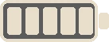
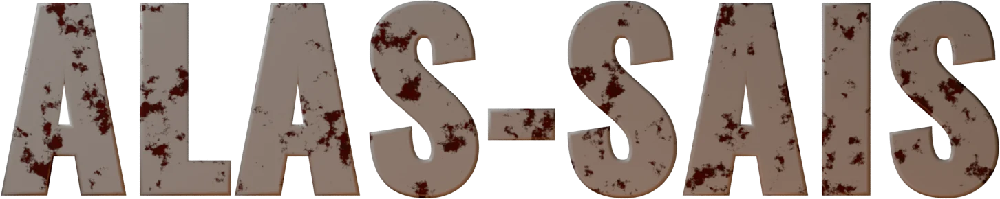
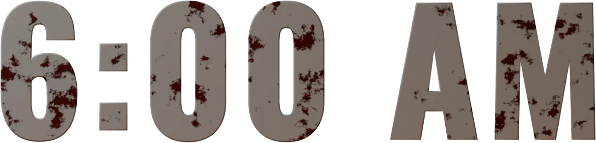

12:00 AMNIGHT 1
Sanity

TITA CORA
TITA CORA
INCOMING CALL
C
Tita Cora
Loading
WARNING · BABALA
This game contains flashing lights, sudden loud sounds, jumpscares and dark, frightening scenes. It may not be suitable for players with photosensitive epilepsy, heart conditions or anxiety. Headphones recommended.
May kumikislap na ilaw, biglang malalakas na tunog, jumpscare at nakakatakot na eksena ang larong ito. Maaaring hindi ito angkop sa may photosensitive epilepsy, sakit sa puso o anxiety. Mas maganda kung may headphones.
You can soften scares and motion in Settings · Mapapalambot ang takot at galaw sa Settings
Keyboard: ← → / A D turn · 1 door · 2 window · 3 aparador · S back · H hide · SPACE hold · F flashlight · Esc pause
C
0917 ••• 6262
12:00 AM
